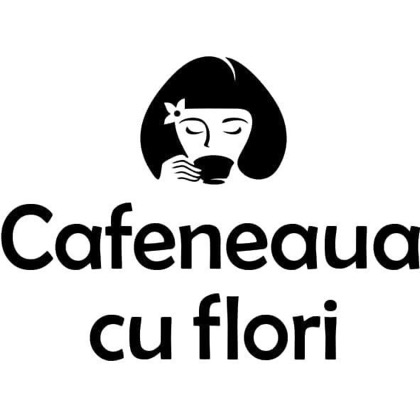

Barista
Cafea făcută pe loc, luată la pachet. Ciocolata caldă e singurul produs pe care recenziile îl numesc pe nume.

Cafeneaua cu Flori 0773 790 024Zilnic 08:00–18:30 · două adrese în București
O florărie și o cafenea în același loc, în două puncte din București. Aceeași persoană îți face cafeaua și buchetul.
Două meserii, aceleași mâini
Cafea făcută pe loc, luată la pachet. Ciocolata caldă e singurul produs pe care recenziile îl numesc pe nume.
Buchete legate în fața ta, aranjamente, coroane, decor de eveniment. Aceeași persoană, la doi pași de espressor.
„Barista-gazdă care e și floral designer, atmosferă primitoare între toate decorațiunile și florile.”Danny Mike · Local Guide, 362 de recenzii · recenzie pe Google
Se face pe loc și pleacă cu tine: spre birou dimineața, sau la plimbarea de după-amiază prin cartier. Iar dacă e vreme bună, ai unde să stai afară, în fața magazinului.
Florăria
Tema cea mai des pomenită în recenzii: apare de cinci ori.
Pentru masă, pentru vitrină, pentru un birou care are nevoie de ceva viu.
Nunți, botezuri, aniversări. Se discută din timp, ca să iasă exact cum vrei.
Pentru comenzi urgente, un telefon ajunge mai repede decât un mesaj.
Înveți să legi tu buchetul. Cu o cafea în mână, că tot ești acolo.
Categoria lor, nu a noastră: așa și-au numit-o singuri pe Instagram.
Vitrina
Ilustrațiile țin locul fotografiilor până primim pozele reale din cele două magazine. Fiecare casetă are deja formatul final, deci se înlocuiesc una la una.
Perechea
—
—
Ce zice lumea
„Barista-gazdă care e și floral designer 🌺, atmosferă primitoare între toate decorațiunile și florile.”
„Absolut minunat! Cafea delicioasă combinată cu buchete superbe de flori. Recomand!”
„Am cumpărat un buchet de flori și a rezistat 5 zile, plăcut surprinsă de calitatea serviciilor. Recomand ☺️”
„Bem cafea aici de când s-a deschis cafeneaua și ne face plăcere să revenim de fiecare dată, mai ales că locuim în zonă.”
Toate cele 37 de recenzii, pe Google →
Recenzii publice, citate integral, cu numele autorului și numărul de stele. La multe dintre ele proprietarul a răspuns personal.
Unde ne găsești